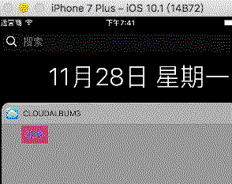

1> 创建
假设你已经有一个APP，现在要为它创建一个Today Widget
1> 用Xcode打开项目，选择File->New->Target，选择Today Extension
2> 输入名称->完成之后可在项目目录中看到

3> 运行该widget的效果(Scheme选为MyWidget)

2> 初始界面&&UI样式
1> 系统给我们创建一个storyboard作为初始界面，并且使用了AutoLayout
系统提供样式注意点
1、尽量不要使用背景，默认的毛玻璃效果很好，也比较统一
2、尽量保持默认的缩进，即左边会空几个像素
如果想改变默认缩进，有一个方法：
-(UIEdgeInsets)widgetMarginInsetsForProposedMarginInsets:(UIEdgeInsets)defaultMarginInsets
{
return UIEdgeInsetsZero;
}
2.1> 代码布局
- 使用代码布局的话需要修改一下plist文件
- 将原有NSExtensionMainStoryboard字段删除，添加字段NSExtensionPrincipalClass，value是你所写的controller的名称，一般默认的都是TodayViewController
3> 跳转到主应用
在插件的storyboard上加几个按钮，分别跳转到主应用的不同页面 ,如何实现？？
OpenUrl方法
self.extensionContext其实就是Today这个app，然后有Today和主应用进行进程间通讯，里面很复杂，但方法封装的很简单，就是OpenUrl
代码
MyWidget中
-(void)jumpButClick:(id)sender{
[self.extensionContext openURL:[NSURL URLWithString:@"cloudalbum3://action=GotoMainPage"] completionHandler:^(BOOL success) {
NSLog(@"open url result:%d",success);
}];
}
主应用的AppDelegate中
- (BOOL)application:(UIApplication *)app openURL:(NSURL *)url options:(NSDictionary<UIApplicationOpenURLOptionsKey,id> *)options{
NSString *prefix = @"cloudalbum3://action=";
if ([[url absoluteString] rangeOfString:prefix].location != NSNotFound) {
NSString* action = [[url absoluteString] substringFromIndex:prefix.length];
if ([action isEqualToString:@"GotoMainPage"]) {
[self switchRootViewController];
}
else if([action isEqualToString:@"GotoOrderPage"]) {
}
}}
协议以及配置
- 协议名：cloudalbum3
- 主应用的plist中配置

实现效果

4> 数据共享
插件怎么能获取主应用的数据呢？要知道插件和主应用是独立的两个进程，以前是无法共享数据的，现在可以通过AppGroup来共享数据，同属于一个group的App共同访问并修改某个数据。
4.1> 创建Group
4.1.1> 主应用的Target中

4.1.2> MyWidget的Target中

- 注意：MyWidget中的组名选择 主应用的Target中创建的
4.2> 读写数据(NSUserDefaults方式)
通过NSUserDefaults来读写数据，注意NSUserDefaults是根据刚才创建的group来创建的
4.2.1> 主应用中创建数据
NSUserDefaults* userDefault = [[NSUserDefaults alloc] initWithSuiteName:@"group.huijia"];
[userDefault setObject:@"nmj" forKey:@"group.huijia.nickname"];
4.2.2> 插件中获取数据
NSUserDefaults* userDefault = [[NSUserDefaults alloc] initWithSuiteName:@"group.huijia"];
NSString* nickName = [userDefault objectForKey:@"group.huijia.nickname"];
if (nickName) {
NSString* message = @"今天XX又给你准备了很多惊喜哦，快去看看吧！";
self.messageLabel.text = [NSString stringWithFormat:@"%@,%@",nickName,message];
}
4.3> 读写数据（NSFileManager）
4.3.1> 主应用中创建数据
- (BOOL)saveDataByNSFileManager{
NSError *err = nil;
NSURL *containerURL = [[NSFileManager defaultManager] containerURLForSecuri
tyApplicationGroupIdentifier:@"group.com.xxx"];
containerURL = [containerURL URLByAppendingPathComponent:@"Library/Caches/
widget"];
NSString *value = @"asdfasdfasf";
BOOL result = [value writeToURL:containerURL atomically:YES encoding:NSUTF8StringEncoding error:&err];
if (!result) {
NSLog(@"%@",err);
} else {
NSLog(@"save value:%@ success.",value);
}
return result;
}
4.3.2> 插件中获取数据
- (NSString *)readDataByNSFileManager{
NSError *err = nil;
NSURL *containerURL = [[NSFileManager defaultManager] containerURLForSecuri
tyApplicationGroupIdentifier:@"group.com.xxx"];
containerURL = [containerURL URLByAppendingPathComponent:@"Library/Caches/
widget"];
NSString *value = [NSString stringWithContentsOfURL:containerURL encoding:
NSUTF8StringEncoding error:&err];
return value;
}
5> 定时更新
5.1> 自身更新机制
Widget自身更新机制当用户下拉通知中心(Notification Center)时立即更新数据
5.2> 自定义的刷新(NSTimer)
NSTimer触发时机
viewWillAppear 中触发
viewDidDisappear 中取消

6> iOS10之后的展开布局
6.1> 设置Widget的size
- (void)viewDidLoad {
[super viewDidLoad];
// Do any additional setup after loading the view from its nib.
if (isIOS10)
{
self.extensionContext.widgetLargestAvailableDisplayMode = NCWidgetDisplayModeExpanded;
}
self.preferredContentSize = CGSizeMake(kWidgetWidth, 110);
}
6.2> 重写展开及折叠
- (void)widgetActiveDisplayModeDidChange:(NCWidgetDisplayMode)activeDisplayMode withMaximumSize:(CGSize)maxSize
{
NSLog(@"maxWidth %f maxHeight %f",maxSize.width,maxSize.height);
if (activeDisplayMode == NCWidgetDisplayModeCompact)
{
self.preferredContentSize = CGSizeMake(maxSize.width, 110);
}
else
{
self.preferredContentSize = CGSizeMake(maxSize.width, 200);
}
}